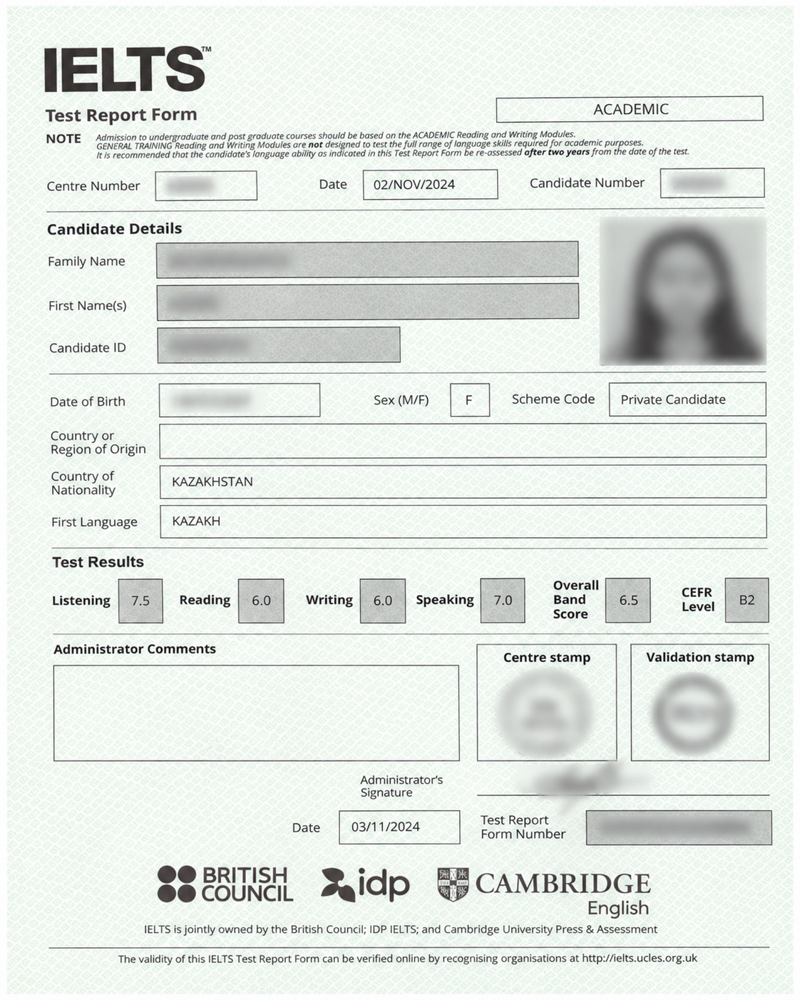
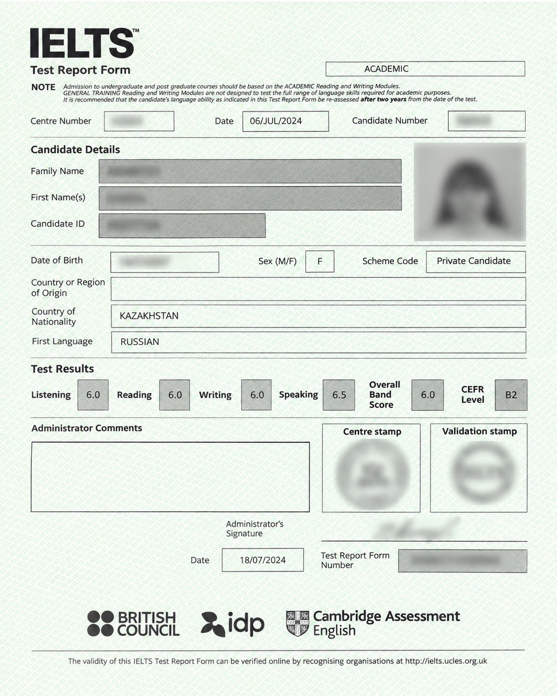

MY TEACHING JOURNEY
Teaching Experience
I have more than 10 years of experience teaching English to children, teenagers, and adults. My work has included General English, IELTS preparation, speaking classes, online lessons, and academic support for learners at different levels.

Helping learners become confident communicators
My teaching focuses on practical communication. I want students to use English, not simply study rules.
Over the years, I have worked with learners from beginner level to advanced exam preparation and have supported students preparing for IELTS and other academic goals.
I also create speaking activities, lesson materials, vocabulary resources, writing exercises, and digital learning tools.
What I Teach
IELTS Preparation
Preparation for IELTS Speaking, Writing, Reading, and Listening, including exam strategies, vocabulary development, writing structure, and speaking practice.
General English
English lessons for children, teenagers, and adults, with a focus on vocabulary, grammar, listening, pronunciation, and everyday communication.
Speaking & Confidence
Conversation-focused lessons designed to help learners speak more naturally, express their ideas clearly, and become more confident using English.
Student IELTS Results
A selection of results from students I have supported. Personal information is hidden to protect student privacy.
Student IELTS Results
A selection of results from students I have supported. Personal identifying information has been hidden for privacy.

IELTS Student Result
A real IELTS result from one of my students. Personal information has been hidden to protect the student's privacy.

IELTS Student Result
Another student result showing progress through structured IELTS preparation, speaking practice, writing support, and exam strategy.
Another example of progress achieved through structured preparation and regular practice.
Inside My Classroom
A look at my classroom, online lessons, speaking activities, and the learning environment I create for my students.
Add your classroom photo here.
Add a screenshot from an online lesson here.
Add a speaking activity or teaching photo here.
My Teaching Approach
I believe language should be used from the beginning. My lessons combine structure with real communication so students can gradually become independent and confident speakers.
- Speaking from the first lesson
- Practical vocabulary and grammar
- Regular speaking practice
- Clear feedback and correction
- Exam strategies for IELTS students
- Lessons adapted to each learner's level and goals